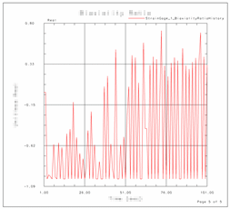

使用分析应变片命令可通过应变片应变花数据创建耐久性函数。可以通过以下途径获取应变片应变花数据：
响应仿真求解过程。可以从列表或图形窗口选择应变片数据。
AFU 文件。可以从测试设置获取存储在 AFU 文件中的应变片数据。
耐久性函数保存到目标 AFU 文件中。在 XY 函数导航器中可以查看耐久性函数。
|
以下耐久性函数可以作为时间函数：
|
 |
可以请求 NX 将横向加载比写入存储应力和应变函数的 AFU 记录中。横向加载比（有时称为有效双轴比）写入 AFU 记录的用户值字段。
分析应变片时，可以使用用户默认设置来设置默认输出请求。可以在用户默认设置对话框的仿真→NX 高级耐久性→应变片分析选项卡上设置默认值。
双轴比和非比例指示函数可以帮助决定损伤计算所使用的疲劳寿命准则。使用计算损伤命令，可以生成包含应变片损伤位置信息的电子表格。
|
应用模块 |
高级仿真 |
|
工具条 |
耐久性→分析应变片 |
|
菜单 |
插入→耐久性→分析应变片 |